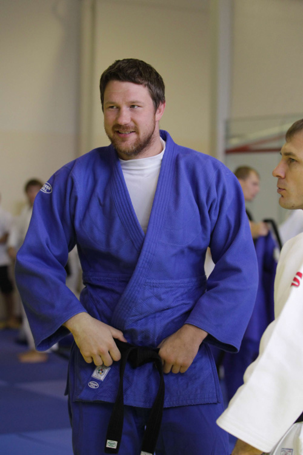
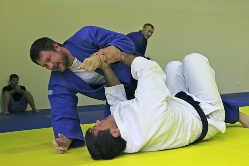
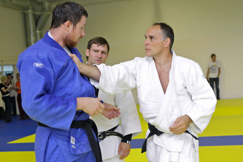
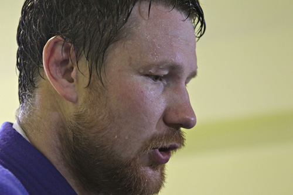

Я сделаю все, чтобы победить!
«Он точно готов быть первым номером в сборной. Я абсолютно уверен в том, что сейчас Александр – номер один и готов показать на Олимпиаде результат высокого уровня».

Так охарактеризовал своего подопечного Александра Михайлина итальянский тренер российской сборной Энцио Гамба. Пресс-конференция мужской делегации проходила в шикарном клуб-отеле в Репино, это 50 км от Санкт-Петербурга. Здесь же проходил и последний сбор. Место выбрано не случайно. Во-первых, прекрасные условия, уединенность и тишина, позволяют ребятам правильно настроиться на главный старт четырехлетия. Во-вторых, база в Репино, приносит удачу, считают тренеры, именно здесь проходил сбор перед прошлогодним триумфальным чемпионатом мира в Париже. На Михайлина надеется Гамба, поклонники и любители единоборств, он словно осознавая ответственность, прогнозы делать не хочет…– В какой физической форме вы находитесь за пару дней до Олимпиады?
– В отличной. Мы постараемся, что бы пик формы пришелся на день борьбы. Буду бороться как на обычных соревнованиях, как в прошлом году на чемпионат мира. Если у меня в день состязаний будет такое настроение как сегодня – все будет хорошо. Главное – не поддаться всеобщему ажиотажу. Думаю, тренеры помогут справиться с любым волнением. Не буду хвалиться, что с легкостью порву всех соперников, но сделаю всё, для того чтобы победить. Я знаю всех оппонентов, в принципе они проходимы. Все будет зависеть от того, кто в какой форме подойдет к Лондону.
– Тренировки с Гамбой сильно отличаются от того, что было раньше?
– С Гамбой работать комфортно. Конечно, он меня не учит делать заднюю или переднюю подножку, он помогает в работе над тактическими нюансами, например, как сделать ту же подножку в хорошей комбинации в зависимости от стиля соперника. Тем более восьмерку подгруппы, я уже знаю.

– А как оцениваете свои возможности?– Если бы у меня не было шансов на победу, то я бы и не ехал в Лондон. Себя трудно оценить. Не буду делать громких заявлений, постараюсь достойно выступить. Для себя и для страны. А как получится, увидим третьего августа.
– Вы общаетесь с Президентом России, когда видитесь, о чем говорите?
– Обо всем, в том числе о спорте. Владимир Владимирович очень разносторонний человек и с ним интересно поговорить. На татами в спарринге отрабатывали приемы, но у нас разные весовые категорий.
– Для многих спортсменов Олимпиада своеобразный Рубикон…
– Я сначала на ней выступлю, а потом уже посмотрим… Не знаю, когда закончу спортивную карьеру. Во-первых, пока не вижу особых конкурентов в сборной, а значит и приемников. Но если они подтянуться, буду рад уступить место. Во-вторых, Олимпиада может многое решить, отборовшись на ней, буду точно знать останусь в спорте или завяжу.

– Родные и близкие помогают в подготовке?– Они меня не трогают. Лучше одному спокойно готовиться к старту, потому что спортсмены перед состязаниями становятся нервозными, и каждое неправильно сказанное слово может привести к ссоре.
– У вас 2 дочки и 3 сына, часть сборной по дзюдо уже готова…
– К сожалению, с семьей я вижусь редко… 300 дней в году нахожусь на сборах или турнирах, поэтому общаемся с ними в основном по скайпу или телефону. Я не хочу кого-то тянуть в дзюдо или в спорт вообще. Если выберут спортивную карьеру – против не буду. Если нет, заставлять не стану.
– Вы действующий капитан Вооружённых сил. Форму часто одеваете?
– Когда? Я 300 дней в году на сборах. В последний раз на СИЗМЕ, лет 8 назад.

– Вы успешный спортсмен, у вас дружная семья. В чем секрет такого человеческого счастья?– Никакого рецепта нет, просто все хорошо, я люблю семью, они меня поддерживают. Ирина раньше занималась дзюдо, но это было на уровне Москвы. Но она спортсменка потому, что вместе со мной уже 10 лет. И вся ее жизнь – это мое дзюдо. Все переживания, травмы, победы и проигрыши. Брат тоже спортсмен. Мама рядом с нами всегда.
– А с братом какие у вас взаимоотношения?
– Со Славой мы друг другу помогаем. Хотя он в основном выступает в самбо, но тренироваться мы стараемся вместе. Он очень техничный, делает подхват, так как даже я не умею. Хотя конституция тела похожая, и манера боя тоже. У него своеобразный стиль. Из-за постоянных сборов, даже не помню, когда последний раз был на его соревнованиях. Ему ко мне сложно приехать, у него тоже сборы. Единственное, когда выступаем на чемпионате страны по дзюдо, стараемся вместе тренироваться, разминаться, жить в одном номере, что бы больше общаться.
Автор: Венера Молдыбаева